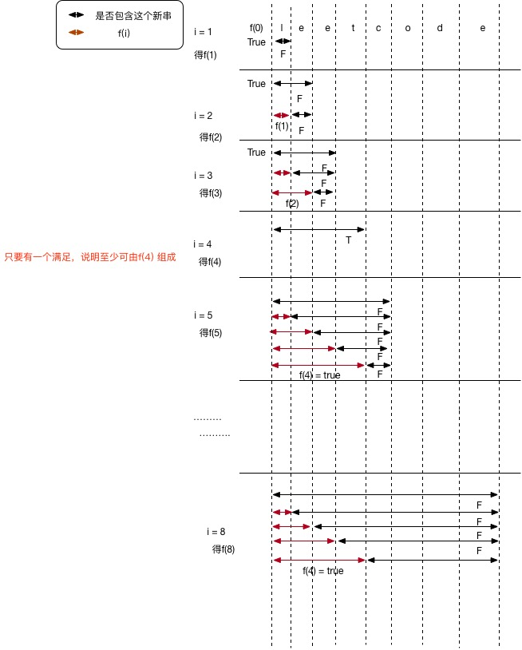

☰ 目录
139 单词拆分
给定一个非空字符串 s 和一个包含非空单词列表的字典 wordDict，判定 s 是否可以被空格拆分为一个或多个在字典中出现的单词。
说明：
- 拆分时可以重复使用字典中的单词。
- 你可以假设字典中没有重复的单词。
示例 1：
输入: s = "leetcode", wordDict = ["leet", "code"]
输出: true
解释: 返回 true 因为 "leetcode" 可以被拆分成 "leet code"。
示例 2：
输入: s = "applepenapple", wordDict = ["apple", "pen"]
输出: true
解释: 返回 true 因为 "applepenapple" 可以被拆分成 "apple pen apple"。
注意你可以重复使用字典中的单词。
示例 3：
输入: s = "catsandog", wordDict = ["cats", "dog", "sand", "and", "cat"]
输出: false
解
F(0, N) = F(0, i) && F(i, j) && F(j, N); * 这样子，如果我们想知道某个子串是否可由Dict中的几个单词拼接而成就可以用这样的方式得到结果（满足条件为True, 不满足条件为False）存入到一个boolean数组的对应位置上，这样子，最后boolean 数组的最后一位就是F(0, N)的值，为True表示这个字符串S可由Dict中的单词拼接，否则不行！
这是一个动态规划问题，只要能将一个大问题划分成子问题即可。

class Solution {
public:
bool wordBreak(string s, vector<string>& wordDict) {
vector<bool> f(s.size()+1, false);
f[0] = true;
for( int i = 1; i <= s.size(); i++ ){ // 因为 i 是从1 开始的，所以是 <=
for( int j = 0; j < i; j ++ ){
if (f[j] && find(wordDict.begin(),wordDict.end(), s.substr(j, i - j))!= wordDict.end() ){
f[i] = true;
break; // find one is ok.
}
}
}
return f[s.size()];
}
};
Java 版本：
public class Solution {
public boolean wordBreak(String s, Set<String> dict) {
boolean[] f = new boolean[s.length() + 1];
f[0] = true;
/* First DP
for(int i = 1; i <= s.length(); i++){
for(String str: dict){
if(str.length() <= i){
if(f[i - str.length()]){
if(s.substring(i-str.length(), i).equals(str)){
f[i] = true;
break;
}
}
}
}
}*/
//Second DP
for(int i=1; i <= s.length(); i++){
for(int j=0; j < i; j++){
if(f[j] && dict.contains(s.substring(j, i))){
f[i] = true;
break;
}
}
}
return f[s.length()];
}
}